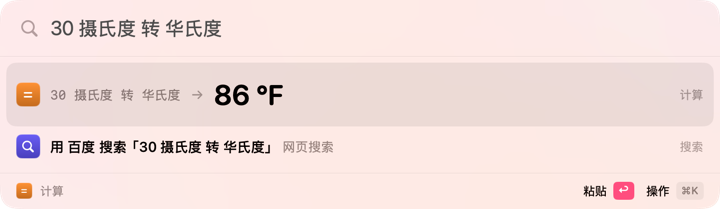
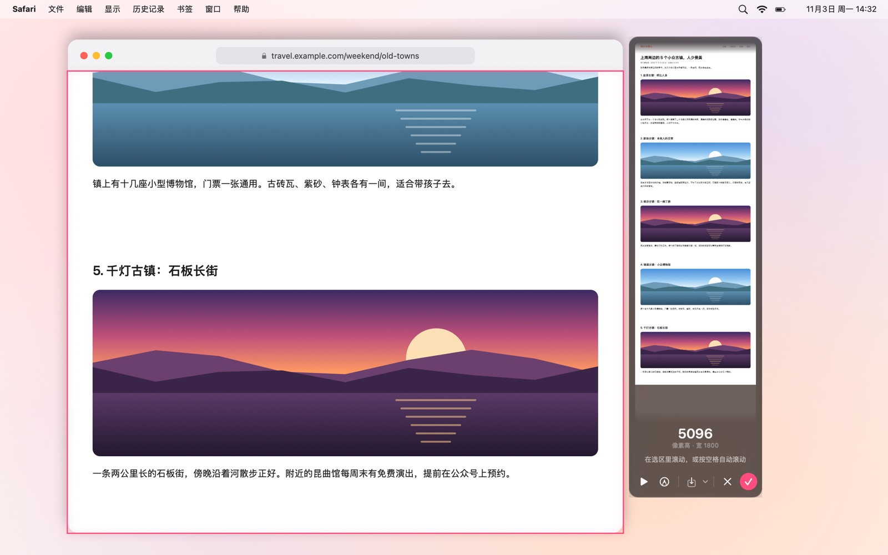
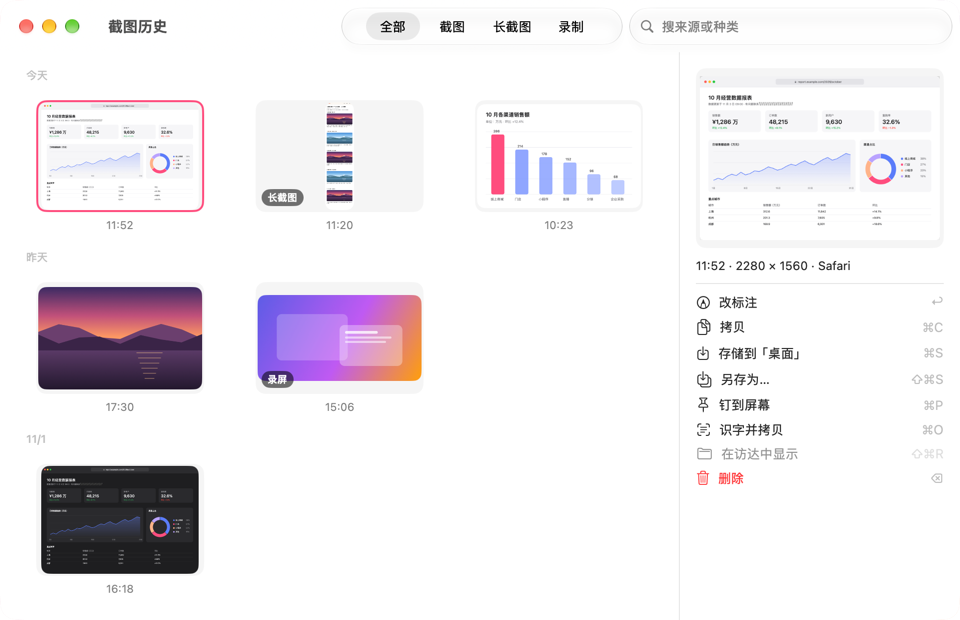
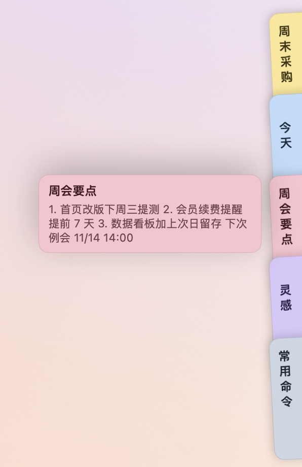
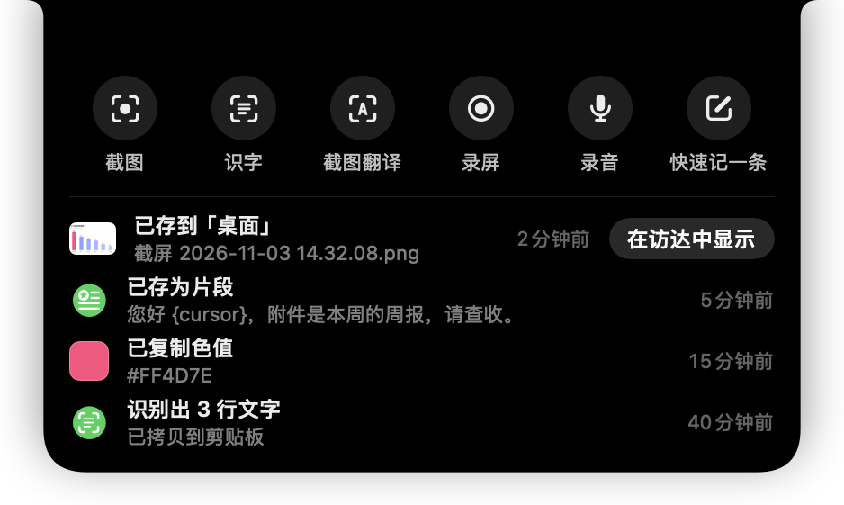
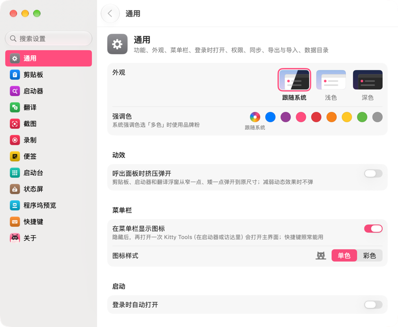

功能
每一样都按一下就到
十来样常用的小工具，各有各的快捷键，弹出时不抢你正在用的 App。下面每一节标着它在哪个平台上有。
主界面与菜单栏
MacWindows
点一下菜单栏里的猫（Windows 上是托盘图标），全部功能一格一格摆着，点一下就用。
- 左键是主界面，右键是菜单
- 每个功能的开关就在格子上，原地切换
- 菜单栏图标可以换成彩色的，也可以整个藏起来，快捷键照常能用
- 第一次打开有欢迎引导，带你给权限、试一下快捷键；关于页里能重看

剪贴板历史 ⌥C
MacWindows
复制过的文字（保留格式）、图片和文件都记下来，重复的只挪到最前面。
- ↩ 粘回原来的 App，⌥↩ 粘成纯文本，⌘1–9 直接粘第几条；多选后合并粘贴；删了能 ⌘Z 撤回
- 选中哪条就原地展开预览：代码带行号和着色，颜色给出 HEX / RGB / HSL，链接带标题和头图，⌘Y 放大看
- 正文、图片里的字（本机识别）、文件路径、备注、来源 App 都能搜；Tab 按类型、来源、收藏夹筛选
- 收藏夹、片段和备注；片段能带日期、时间、光标位置、前几条剪贴板这类占位符；收藏和片段不会被自动清理
- 文件 ⌘O 打开、⌘R 在访达中显示，⌘T 翻译这一条，图片钉到屏幕上，条目直接拖进别的 App
- 跳过密码管理器和带隐私标记的内容，拦下看着像密钥、银行卡号的文本；能排除 App、暂停记录，退出或锁屏时清空

启动器 ⌥Space
MacWindows
一个搜索框，打开 App、找文件、算算数、搜网页。
- 搜 App：中文名、拼音全拼和首字母都认（「hdjsq」就是活动监视器），按使用频率排，收藏的排最前
- 搜文件：「open 文件名」打开，「find 文件名」在访达里选中；⌘Y 快速查看，⌘K 换个 App 打开
- 计算和换算：四则运算、百分比、函数；「10 km to mi」「30 摄氏度 转 华氏度」「255 in hex」，↩ 把结果粘出去
- 系统命令：锁屏、睡眠、清空废纸篓、静音；退出或强制退出 App、推出磁盘；「kill」结束进程，「port 3000」看端口被谁占着
- 搜「蓝牙」「显示器」直达那一页系统设置；「g 关键词」搜网页，预置十几个常用网站，也能自己加
- 本机浏览器的书签和历史，带网站图标；输网址或 ~/ 开头的路径直接打开

翻译 ⌥D
MacWindows
选中就翻，不用切窗口。输入翻译 ⌥T、截图翻译 ⌥S，也能打开复制即译。
- 划词翻译：在任何 App 里选中文字按快捷键，浮窗跟着鼠标出来；取不到选区时自动改用拷贝取词，用完把剪贴板还原
- 截图翻译：框一块屏幕，在本机认出字再翻译
- 内置服务开箱即用；另有百度、有道、Google、DeepL、微软、火山、腾讯，以及各家大模型，填好密钥就能用；几家一起出结果，大模型边生成边显示
- 查单个词给词典释义；译文能直接替换原文，也能设一个快捷键一按就替换
- 翻译历史和生词本：能搜、能收藏，导出成表格或背单词卡片
- 11 种语言；目标语言选「自动」时在你的第一、第二语言之间互译；能朗读、自动复制译文

截图 ⌥A
MacWindows
截下来，标清楚，再送出去。截取上次的区域 ⌥X，识字 ⌥O。
- 先冻结屏幕再框选，悬停自动认出窗口，吸附窗口边和屏幕边；尺寸能直接输，比例能锁
- 放大镜取色，按 C 复制光标处的色值
- 十种标注：矩形、椭圆、箭头、直线、画笔、荧光笔、文字、序号、马赛克、聚光灯，数字键切换；画完还能挪、能改、能撤销
- ↩ 拷贝，⌘S 存储，钉在屏幕上当参考；识字（也认二维码）、截图翻译
- 长截图：框好后按 S，在选区里往下滚就自动拼接，按空格自动滚；拼完照样能标注
- 截图历史：截图、长截图、钉过的图、录屏录音都收在一处，能搜能筛；双击一张接着改标注



录屏与录音 ⌥R
MacWindows
和截图一样框一块区域或整块屏幕，↩ 开始，默认倒数 3 秒。
- 录系统声音和麦克风，能显示点按和按下的键
- 菜单栏里计时，再按一次快捷键停止并保存
- 录音先出控制条：选好来源（麦克风、系统声音或两者）再开始，看得到电平，存成 m4a
- 录完的视频卡停在屏幕角落：拷贝、拖走、转成 GIF 或压缩
- 帧率、清晰度、编码格式都能在设置里选

便签 ⌥N
仅 Mac
贴在屏幕边上的便签，想到什么随手记一条。
- 快速记一条：在任何 App 里按 ⌥N 弹出小框，记成新便签，或者接在某一条后面
- 屏幕边缘的那叠：药丸贴在屏幕边上，鼠标靠过去扇出标签，点开就写，写完回到原来的 App
- 全部便签：便签墙和列表两种看法，能搜索、归档、固定；删掉的留 30 天，能放回
- 浮在屏幕上：把便签拖出来钉在桌面上，重启后回到原处
- 正文是纯文本加 Markdown 样式：标题、列表、引用、代码块、链接；五种任务状态、文字颜色、行内图片，便签里查找、撤销
- 整个或单条导出成 Markdown，再导回来；和剪贴板、启动器、划词翻译打通；能在几台 Mac 之间同步


启动台
仅 MacmacOS 26 起
熟悉的全屏 App 图标网格，背景是糊开的桌面壁纸。
- 一页一页翻；打开就能打字搜，中文名、拼音、首字母都行
- 拖动排序，拖到一起建文件夹
- 按住图标进入抖动模式，删掉从 App Store 装的 App
- 四指或五指捏合触控板打开，画面跟着手指走；也能设一个触发角
- 第一次打开时照系统原来的启动台排好页和文件夹；macOS 15 上用系统自带的，这一项不出现

状态屏
仅 Mac
一键把所有屏幕盖上一块告示，同时拦住键盘和鼠标。擦屏幕、电脑在跑任务不想被人碰、离开座位时用。
- 自带「清洁屏幕」「请勿触碰」「马上回来」
- 告示的文字、动画表情、样式都能改，可以存好几个状态，按快捷键先选一个再进
- 按住 Esc 2 秒，或者用鼠标按住屏幕底部的提示退出
- 还可以加一道退出密码

程序坞预览
仅 Mac默认关
鼠标停在程序坞的 App 图标上，上方弹出它所有窗口的缩略图。
- 最小化的、隐藏的、在别的桌面上的窗口也列出来
- 点一张切过去；悬停时点 ✕ 关掉那扇窗
- 在 设置 › 程序坞预览 里打开；要辅助功能授权，有屏幕录制授权才有缩略图

刘海岛
仅 Mac
复制好了、存好了、出错了，提示都从刘海里长出来。
- 鼠标停上去展开，看全文和按钮：在访达中显示、撤销、重试……
- 点一下刘海，叫出最近 10 条提示和一排常用动作：截图、识字、截图翻译、录屏、录音、快速记一条
- 没有刘海的屏幕用快捷键打开，出现在菜单栏下面


设置、同步与备份
MacWindows
外观、快捷键、各个功能的细节都在设置窗里，侧栏能搜设置项。
- 外观跟随系统，或固定浅色、深色；强调色可以自己挑
- 功能开关：用不上的功能整个关掉，它的入口、快捷键和后台工作一起停，打开立刻回来
- 全局快捷键都能改；快捷键速查表按功能分类、能搜
- 同步：选一个同步盘文件夹（比如 iCloud 云盘），设置、片段和收藏、生词本、便签等在几台电脑之间同步，每类一个开关；密钥不同步。Mac 和 Windows 之间也能互通片段、收藏、生词本、网页搜索和翻译服务
- 每天自动备份一份；设置与数据能导出成一个文件，再导入
- 有新版本时菜单栏里提示，一键更新

默认快捷键
都能在 设置 › 快捷键 里改。没列出来的（录音、截图历史、划词翻译并替换、新建便签、启动台、状态屏……）默认不设，需要时自己录一个。
| 功能 | Mac | Windows |
|---|---|---|
| 剪贴板历史 | ⌥C | Alt+C |
| 启动器 | ⌥Space | Alt+Space |
| 划词翻译 | ⌥D | Alt+E |
| 输入翻译 | ⌥T | Alt+T |
| 截图翻译 | ⌥S | Alt+S |
| 截图 | ⌥A | Alt+X |
| 截取上次区域 | ⌥X | Ctrl+Alt+Z |
| 识字 | ⌥O | Alt+O |
| 录屏（再按一次停止） | ⌥R | Alt+R |
| 快速记一条（便签） | ⌥N | — |
macOS 15.0 和 15.1 不允许只带 ⌥ 的组合，在这两个版本上请改成带 ⌘ 或 ⌃ 的组合，快捷键页会提示。